Descripción general de la interfaz
Layers section
Cuando creamos o abrimos un proyecto esta es la interfaz con la que nos vamos a encontrar.
Está separada en tres apartados.
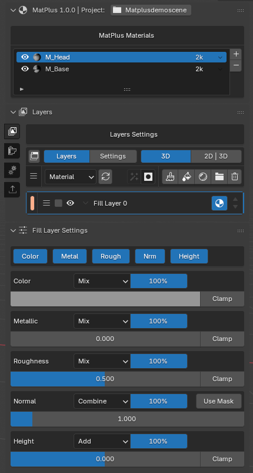
MatPlus Materials
En este apartado te vas a encontrar con la lista de materiales que contienen las mallas.
Con los botones + y - puedes añadir o eliminar materiales de las mallas seleccionadas.
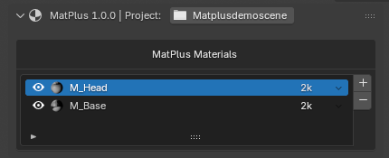
Layers
En este apartado podemos encontrar todas las herramientas que nos van a permitir crear el material.
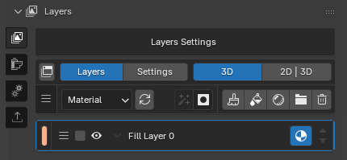
A la izquierda podemos encontrar los botones de las demás secciones.
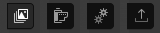
Layers settings
Esta parte funciona en conjunto con el apartado layers. Aqui podemos encontrar todos los valores, opciones y canales.
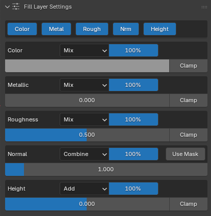
Bake Maps section
Bake Maps
Esta es la sección dedicada a hacer bake de los mapas de texturas.
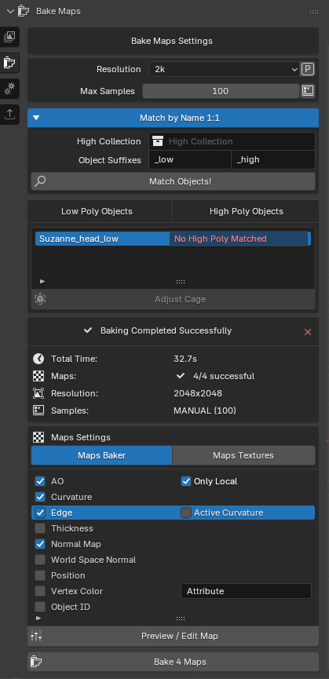
Bake Maps Settings
Este apartado esta dedicado a la configuración de los bakes tales como la resolución o las mallas high poly seleccionadas.
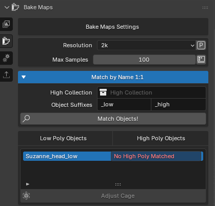
Maps settings
En esta seccion podemos elegir los mapas que van a hacerse bake.
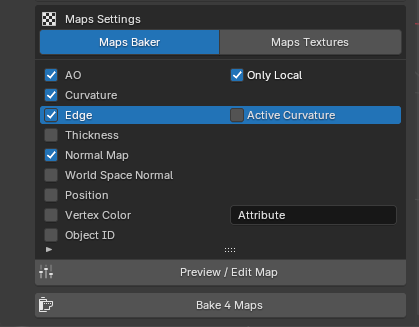
Justo debajo estan los botones para previsualizar/editar y para comenzar a hacer el bake.
Información del bake
Esta parte nos proporciona toda la información necesaria sobre el bake y la configuración que tengamos en el momento.
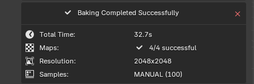
Settings section
Quality Settings
Aqui vamos a poder configurar todas las opciones de calidad que podemos elegir para las texturas y para el viewport.
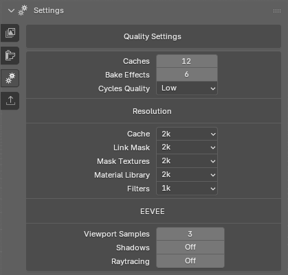
Export section
Export Settings
Aqui vamos a poder configurar todas las opciones que nos brinda el addon para poder exportar las texturas correctamente.
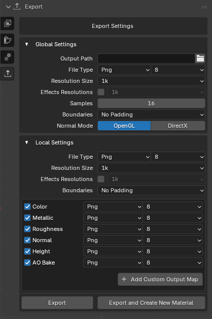